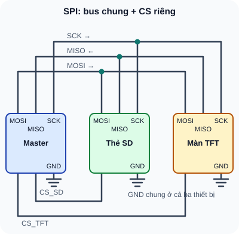

SPI — Giao Tiếp Nối Tiếp Tốc Độ Cao
Serial Peripheral Interface — 4 dây, full-duplex, tốc độ MHz — nền tảng của màn hình TFT, SD card, ADC ngoài và Flash memory.
- Hiểu SPI là giao tiếp đồng bộ, full-duplex với 4 dây cơ bản
- Phân biệt MOSI, MISO, SCK, CS/SS — chức năng từng dây
- Hiểu 4 SPI Mode (0–3): CPOL và CPHA — chọn đúng mode
- So sánh SPI vs I2C — khi nào dùng giao thức nào
- Kết nối nhiều thiết bị SPI qua nhiều CS pin
- Thực hành: đọc/ghi thẻ SD card qua SPI
- Thực hành: hiển thị màn hình TFT 2,4" ILI9341 qua SPI
- Debug SPI: CS không active, mode sai, tốc độ quá cao
Dụng cụ
| Tên | Thông số | SL |
|---|---|---|
| Arduino Uno/ESP32/STM32 | SPI hardware pins | 1 |
| Module SD Card SPI | Với Arduino Uno 5V: phải xác nhận breakout có ổn áp và chuyển mức cho mọi đầu vào SPI 5V; nếu không, dùng host 3,3V/chuyển mức được định mức. | 1 |
| Màn hình TFT SPI 2,4" ILI9341 hoặc ST7789 | 240×320, SPI, 3,3V | 1 (tùy chọn) |
| Thẻ microSD <32GB, format FAT32 | — | 1 |
| Breadboard + dây jumper + multimeter | — | 1 bộ |
1. SPI — 4 dây, tốc độ cao, full-duplex
SPI (Serial Peripheral Interface) là giao thức truyền thông đồng bộ do Motorola phát triển. Tốc độ từ vài kHz đến hàng chục MHz — nhanh hơn I2C 10–100 lần. Không có địa chỉ, thay vào đó mỗi thiết bị có dây CS riêng.

Đọc mô tả D24-1
Master nối MOSI, MISO, SCK dùng chung tới thẻ SD và màn TFT; các đường này không nối với nhau. Master có hai dây CS riêng: CS_SD chỉ tới thẻ SD, CS_TFT chỉ tới màn TFT, active LOW. Ba thiết bị nối GND chung.
1.1 Chức năng từng dây
| Tên dây | Tên cũ | Chiều | Chức năng |
|---|---|---|---|
| MOSI (Master Out Slave In) | SDO | Master→Slave | Dữ liệu từ Master gửi đến Slave |
| MISO (Master In Slave Out) | SDI | Slave→Master | Dữ liệu từ Slave gửi về Master |
| SCK (Serial Clock) | CLK | Master→Slave | Clock đồng bộ — Master tạo ra |
| CS/SS (Chip Select/Slave Select) | NSS, CE | Master→Slave | Active LOW — chọn thiết bị nào đang giao tiếp |
1.2 SPI Mode — CPOL và CPHA
SPI có 4 mode (0, 1, 2, 3) quyết định cạnh nào của clock lấy mẫu dữ liệu:
| Mode | CPOL | CPHA | Clock idle | Lấy mẫu khi | Module phổ biến |
|---|---|---|---|---|---|
| Mode 0 | 0 | 0 | LOW | Cạnh lên (rising) | SD Card, MAX31855, nhiều ADC |
| Mode 1 | 0 | 1 | LOW | Cạnh xuống | Một số ADC, cảm biến áp suất |
| Mode 2 | 1 | 0 | HIGH | Cạnh xuống | Hiếm gặp |
| Mode 3 | 1 | 1 | HIGH | Cạnh lên | ILI9341, ST7789 (màn hình TFT) |
| Tiêu chí | I2C | SPI |
|---|---|---|
| Số dây | 2 (SDA + SCL) | 4+ (MOSI, MISO, SCK, CS×N) |
| Tốc độ | 100k–3,4MHz | 1MHz–80MHz+ |
| Số thiết bị | 112 địa chỉ 7-bit thông thường theo NXP UM10204; số module thực tế còn tùy địa chỉ và tải bus | Mỗi thiết bị cần CS riêng hoặc bộ giải mã; số lượng còn bị giới hạn bởi chân, tải và timing |
| Full-duplex | Không | Có |
| Dùng khi | Cảm biến chậm, nhiều thiết bị, ít pin | Màn hình, SD card, flash, ADC nhanh |
Địa chỉ dành riêng theo NXP UM10204 Rev. 7, §3.1.12 và bảng 4. Không dùng số địa chỉ như giới hạn tải điện cho một bus cụ thể.
2. SPI Pins trên Arduino và ESP32
| Signal | Arduino Uno | Arduino Nano | ESP32 (VSPI) |
|---|---|---|---|
| MOSI | D11 | D11 | GPIO 23 |
| MISO | D12 | D12 | GPIO 19 |
| SCK | D13 | D13 | GPIO 18 |
| CS (tự chọn) | D10 (mặc định) | D10 | GPIO 5 (mặc định) |
3. Thực hành: Đọc/ghi SD Card qua SPI
// SD Card datalogger — Arduino
#include <SPI.h>
#include <SD.h>
const int CS_PIN = 10;
void setup() {
Serial.begin(115200);
if (!SD.begin(CS_PIN)) {
Serial.println("SD init failed!");
return;
}
Serial.println("SD OK");
File f = SD.open("data.txt", FILE_WRITE);
if (f) {
f.println("Nhiet do, Do am");
f.println("25.3, 68.5");
f.close();
Serial.println("Ghi file xong");
}
}
void loop() {}
Format thẻ SD FAT32. Chỉ với breakout đã xác minh chịu logic Uno 5 V và có ổn áp/chuyển mức phù hợp: cấp VCC theo nhãn module, nối GND chung, rồi MOSI=D11, MISO=D12, SCK=D13, CS=D10. Không nối đầu vào thẻ/module 3,3 V trần trực tiếp với ngõ ra 5 V Uno; nếu module chưa rõ mã/revision thì dừng bước đấu dây và dùng mô phỏng SPI. Ví dụ breakout Adafruit 3 V-only khác với breakout Adafruit có regulator và level shifting; không suy khả năng chịu 5 V chỉ từ tên “module SD”.
Upload code → Serial Monitor xem "SD OK" và "Ghi file xong".
Rút thẻ SD, đọc trên máy tính: kiểm tra file "data.txt" có đúng nội dung không.
Thêm timestamp (millis()) vào mỗi dòng ghi. Thêm vòng lặp ghi mỗi 1 giây.
1: SPI 8MHz: 8 bit / 8,000,000 = 1µs/byte. I2C 400kHz, 1 byte = 9 clocks: 9/400,000 = 22,5µs/byte. SPI nhanh hơn 22× cho truyền dữ liệu bulk.
2: Cần: MOSI, MISO, SCK (dùng chung 3 thiết bị) + CS_SD + CS_TFT + CS_Flash = 6 GPIO tổng. Kết nối: MOSI→tất cả MOSI, MISO→tất cả MISO, SCK→tất cả SCK. CS_SD→SD, CS_TFT→TFT, CS_Flash→Flash. Khi không dùng thiết bị nào: CS của nó phải HIGH.
3: (a) Thẻ SD chưa format FAT32 — format lại; (b) CS pin sai trong SD.begin(pin) — kiểm tra pin số; (c) Thẻ SD 64GB+ (SDXC) — Arduino SD library chỉ hỗ trợ SDHC max 32GB; (d) Dây SPI kết nối sai (MOSI/MISO đổi nhau) — kiểm tra lại; (e) Nguồn 3,3V cho module SD không đủ — đo V khi init.